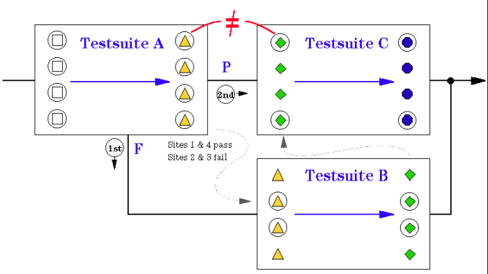

Self-contained Testsuites
If sites are executed in parallel, vectors are always sent to ALL sites, regardless of whether these sites are currently under test or not. The results of the devices not under test are ignored, but their states change.
For this reason, test suites within a test flow should never rely on the state provided by a previous test suite. Instead, self-contained test suites should be used.
A self-contained test suite always starts "from scratch", providing the device with all required initializations. Take a look at the example of the figure below.

The figure above shows a test flow containing three test suites. For each test suite two states are shown,
- the state before the test suite is executed.
- the state after the test suite has been executed
In test suite A, sites 1 and 4 pass, while sites 2 and 3 fail.
First, the fail branch is taken.
As vectors are always sent to all sites, all sites change their state. Therefore, the state before test suite C is not the same as the state after test suite A, even for sites 1 and 4.
The same considerations apply to semi-parallel execution.
The semi-parallel test executes a partial-site parallel test multiple times by switching sites under test in a test suite. Even then, vectors are also sent to sites that are NOT currently under test.
For example, assume that the first parallel test is for sites 1 and 2 and the second parallel test is for sites 3 and 4. During the device test on sites 1 and 2, vectors are also sent to devices on sites 3 and 4. Hence, the states of devices on sites 3 and 4 change. Then, the second test starts for the state-changed devices on sites 3 and 4.
For this reason, you must develop self-contained test suites for semi-parallel tests as well. A self-contained test suite is a test suite that never depends on the state provided by a previous test execution, and provides the device with all required initializations.
In addition, if a site gets binned in a branch, all sites lose their states. This is discussed in further detail in Use of bins with multisite tests.
Functional changes
- Introduced before SmarTest 6.3.2